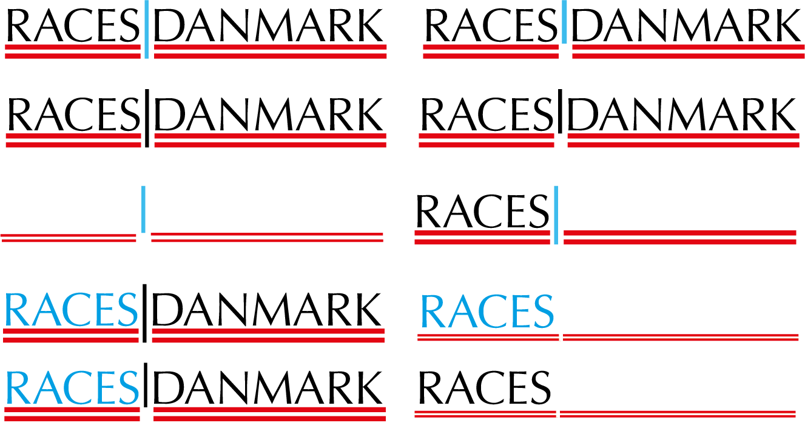
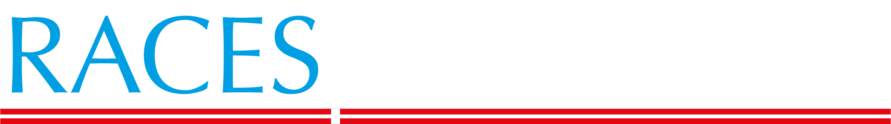

Udvikle et nyt logo til virksomheden Races Danmark
Kunden fik tilsendt en masse forskellige designs som der kunne vælges fra og viderudvikle logo ud fra disse.
Kunden ønskede et nyt logo hvor der både indgik det danske flag, teksten Races Danmark og den blå farve fra det gamle logo
